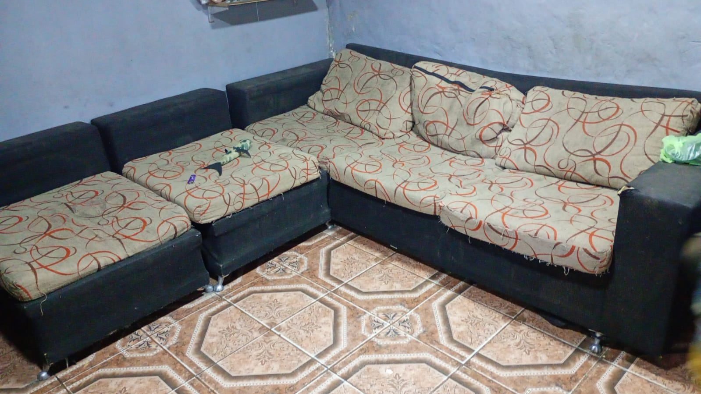
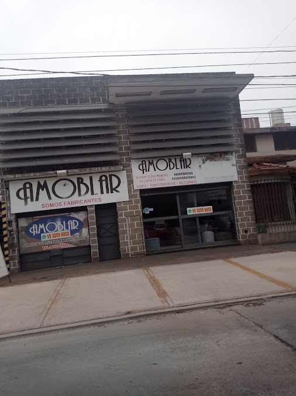

Antes Después
Renovamos
espacios.
Recuperamos
historias.
Renovamos tus espacios y recuperamos los muebles que todavía tienen mucho para ofrecer.
01
Parte de pago
Renovalo. Usalo como parte de pago.
Retiramos y evaluamos tus muebles viejos para que puedas aplicar su valor a una nueva compra, con un descuento a tu medida.
02
Restauración & Retapizado
Recuperalo. Volvé a disfrutarlo.
Restauramos muebles de madera, sillones y retapizamos para devolverles su forma, su valor y la historia que los hace únicos.
03 / Transformaciones
El cambio se ve.
Deslizá para descubrir el resultado de cada restauración.
04 / Muebles
Encontrá tu próximo ambiente.
Explorá algunas de las piezas y estilos que podemos crear para tu espacio.
{kind=link}
{kind=link}
{kind=link}
{kind=link}
{kind=link}
{kind=link}
{kind=link}
{kind=link}
{kind=link}

Nuestro local · Castelar
05 / Quiénes somos
Una historia que se construye en casa.
Desde 1998, acompañamos a Castelar con muebles que encuentran una nueva oportunidad y espacios que se transforman.
Parte de pago
Tu mueble puede ser parte de algo nuevo.
Restauración
Recuperamos su valor, su forma y su historia.
Fabricación
Diseñamos piezas pensadas para tu espacio.
06 / Servicios
Hecho para tu espacio.
Diseñamos, fabricamos y renovamos muebles con soluciones pensadas para vos.
Diseño y fabricación
- Sillones
- Mesas y sillas
- Muebles de pared
- Todo tipo de carpintería
Soluciones a medida
- Sillones personalizados
- Comedores
- Muebles a medida
- Respaldos de cama a medida
Renovación y cuidado
- Retapizados
- Restauraciones en general
- Encolado de sillas
07 / Contacto
Hablemos de tu próximo mueble.
Visitá nuestro local o escribinos para contarnos qué necesitás.